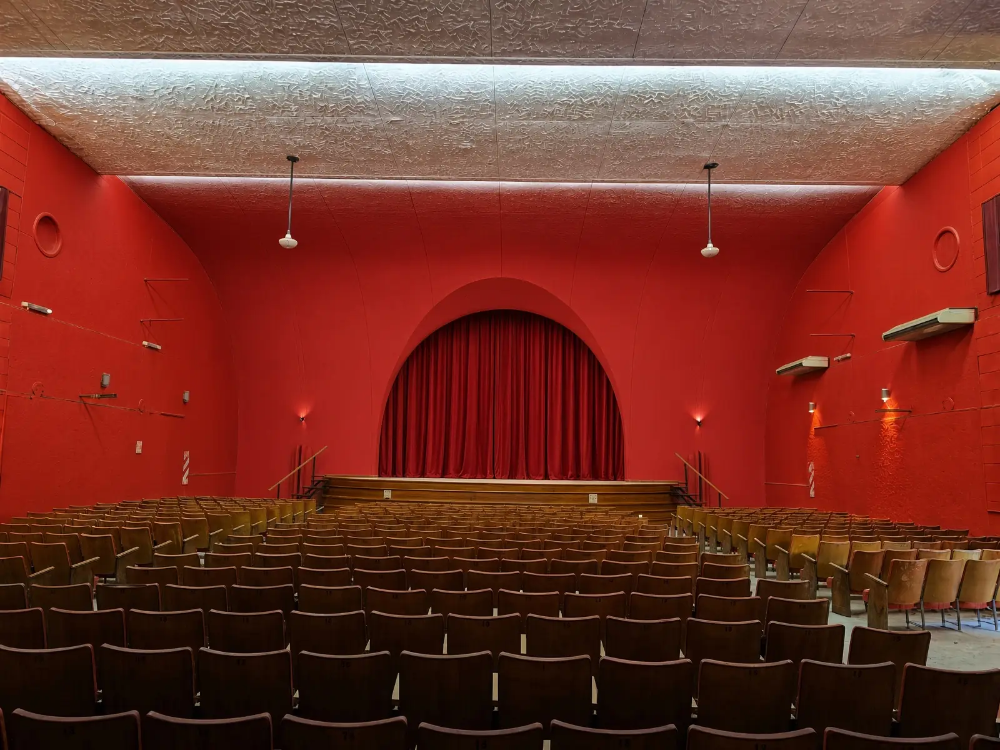
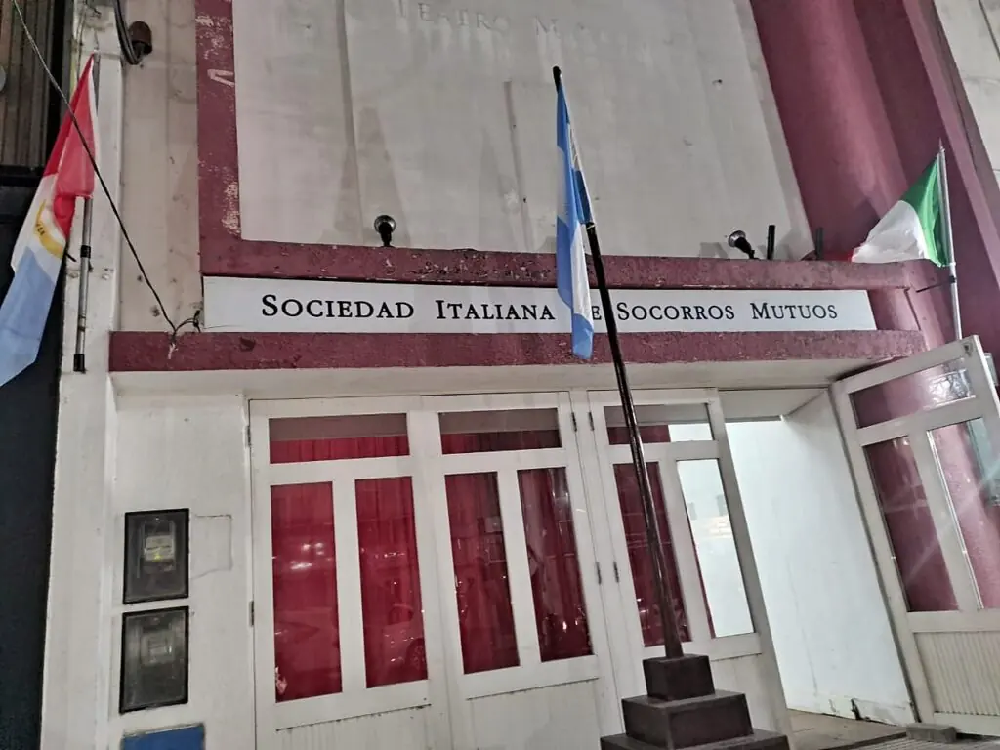
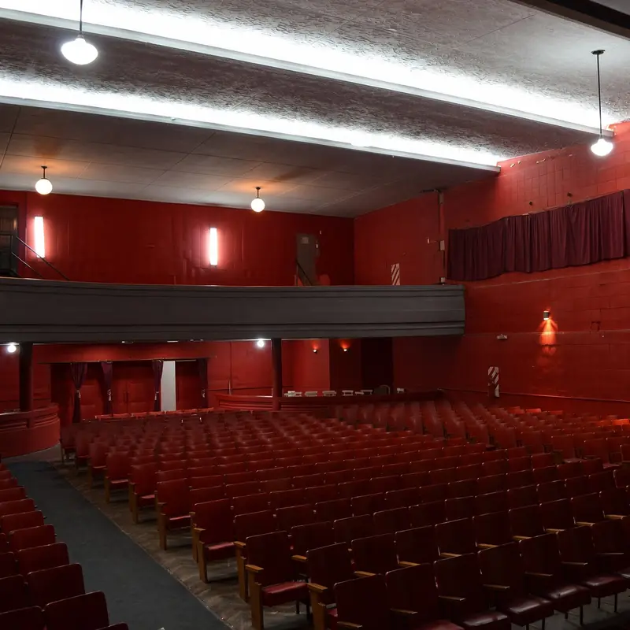
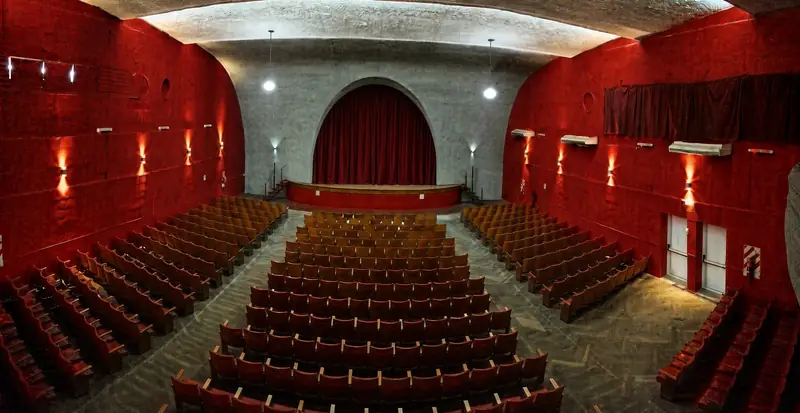
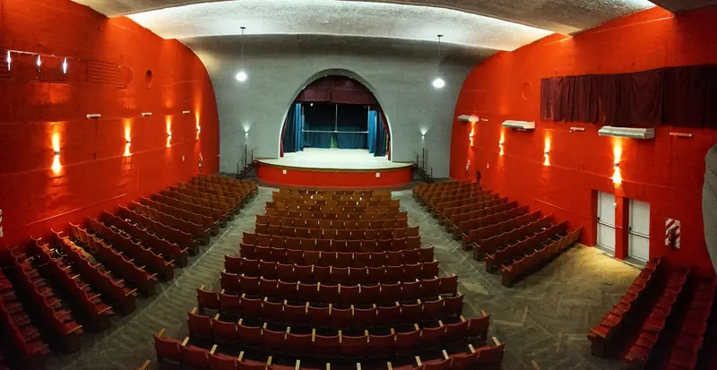
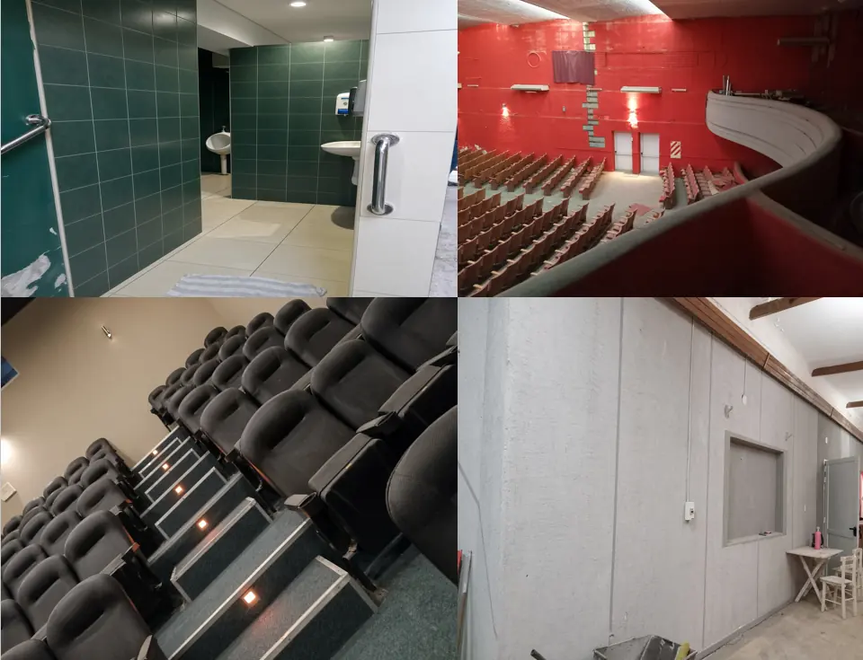

El Teatro
El único teatro de Gálvez pensado como teatro
El único teatro de la ciudad
El Teatro Marconi es el único teatro de Gálvez pensado como teatro. La biblioteca popular y otros espacios se usan, pero no fueron hechos para eso: no tienen la comodidad ni la lógica de una sala. Por eso la idea es proyectarlo como un bien cultural de toda la ciudad y, más adelante, como una sala abierta también a otras colectividades.
«No es de nadie y es de todos»
La comisión de la Sociedad Italiana

Un teatro con una sociedad detrás
El teatro es de la Sociedad Italiana. Comparten el mismo edificio y la misma historia, pero no son lo mismo: la raíz es la Sociedad, y el teatro es la parte más visible desde la vereda.

Sus espacios
El acceso y la sala
Lo que la ciudad reconoce como teatro: la entrada y la sala con su escenario.
El piso de arriba
Allí funcionaron la secretaría y la escuela italiana de la Sociedad.
El Microcine
Un espacio aparte, en la primera puerta a la derecha antes de la entrada principal. Se inauguró en 2015.
Los baños
Se están rehaciendo, porque los originales casi no funcionaban.
La memoria de la sala
Del teatro hay memoria viva y pocas fotos, casi todas de escenario, de los años sesenta a los noventa. Se recuerdan coros de escuelas, funciones en agosto, octubre o noviembre y un tiempo en que la sala movía a los chicos del pueblo. Durante décadas fue el centro cultural de la ciudad.



La obra
El techo era el problema mayor: se llovía. Ahora la obra avanza sobre el techo, las paredes y los baños, y ya se empezaron a arreglar las butacas. El criterio es hacerla a conciencia, para que dure, y no como un parche: se está recuperando el edificio antes de que deje de ser teatro.
Ver la historia completa